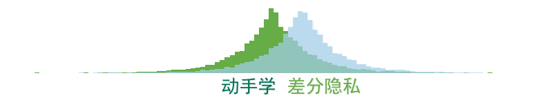

import pandas as pd
import numpy as np
from mplfonts.bin.cli import init
init()
from mplfonts import use_font
use_font('SimHei')
import matplotlib.pyplot as plt
import matplotlib.patheffects as path_effects
plt.style.use('seaborn-whitegrid')
ys1 = [np.random.laplace(loc=0, scale=1) for _ in range(10000)]
ys2 = [np.random.laplace(loc=1, scale=1) for _ in range(10000)]
import matplotlib
f = matplotlib.font_manager.FontProperties(family='SimHei', weight='bold')
f
<matplotlib.font_manager.FontProperties at 0x10aed2d00>
plt.figure(figsize=(10, 2), dpi=80)
_, bins, _ = plt.hist(ys1, bins=100, color='#66AC47',
path_effects=[path_effects.withSimplePatchShadow(alpha=.1, offset=(1,-1))]);
plt.hist(ys2, bins=bins, alpha=.7, color='#A7D4EE',
path_effects=[path_effects.withSimplePatchShadow(alpha=.1, offset=(1,-1))]);
plt.axis('off');
plt.grid('off');
plt.text(-1.7, -240, '动手学', fontproperties=f, fontsize=24, color='#007155',
path_effects=[path_effects.withSimplePatchShadow(offset=(1, -1), alpha=.1)]);
plt.text(0.5, -240, '差分隐私', fontproperties=f, fontsize=24, color='#66AC47',
path_effects=[path_effects.withSimplePatchShadow(offset=(1, -1), alpha=.1)]);
plt.tight_layout()
plt.savefig('logo_zh_cn.png')
